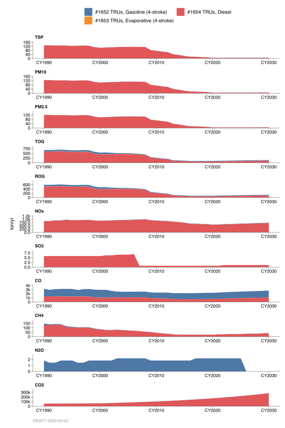
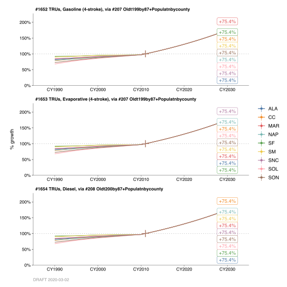

2.2 Transportation Refrigeration Units
2.2.1 Emissions
Introduction
These categories cover emissions from the combustion of fuel in internal combustion engines that provide the power to operate refrigeration units on trucks and trailers. These units maintain low temperatures for certain products (e.g., perishable foods) while they are being transported.
Methodologies
California Air Resources Board (CARB) developed the Off-road vehicle emission inventory’s OFFROAD2007 model to estimate emissions from off-road motor vehicles for all counties and air basins in California. The OFFROAD model contains a more comprehensive list of equipment from a wider range of categories compared to BAH. The OFFROAD model adds an inventory estimate for engines powered by diesel fuel, compressed natural gas (CNG) and liquid petroleum gas (LPG) which were not previously accounted for. The criteria and GHG emission data for transportation refrigeration unit categories in the Bay Area were obtained from the CARB’s OFFROAD2007 model.
Monthly Variation
Monthly activity is assumed to be uniform throughout the year. Weekend activity is reduced compared with weekdays.
County Distribution
County emissions were provided by the CARB’s OFFROAD2007 model.
2.2.2 Trends
History

Prior to the 1999 Base year emissions, the methodology for the transportation refrigeration units was based on the published report: “Report on Utility Equipment Emissions in the State of California”. The average engine power, hours of use per year and emission factors for each type of unit were taken from a study conducted by Booze, Allen, and Hamilton Inc. (BAH). Total number of refrigeration units was based on the Department of Motor Vehicles’ registration data for regular commercial trucks and trailers by county. The total was distributed to counties using this data. The BAH study showed that all transportation refrigeration units consist of diesel units and there are no longer any gasoline power units.
Growth

Projected emissions for the transportation refrigeration units categories were estimated based on ARB’s Off-road vehicle emission inventory model. The growth factors utilized in the OFFROAD model are based on a report for the Air Resources Board entitled “A Study to Develop Projected Activity for “Non-Road Mobile” Categories in California, 1970-2020”. In this report, certain economic indicators are used to project the growth in population and usage of small off-road engines in various applications. In general, the population of small off-road equipment is expected to increase by approximately 34% between 1990 and the year 2010.
Control
In December of 1990, the CARB adopted two levels of emission standards for small off- road engines. The first phase of standards (Tier 1) was implemented in 1995 and Tier 2 standards are scheduled for implementation in 1999. The deterioration rates for 4 stroke Tier 1 engines were derived from data supplied by engine manufacturers. Since engines meeting Tier 2 standards are not yet available, engineering judgment was used to estimate the effect of the more stringent standards.
Projected emissions include expected benefits from ARB’s Clean Diesel Regulations in 1993 and Re-Formulated Gasoline Phase II beginning 1999. These benefits were estimated using control factors developed by ARB.
By: Michael Nguyen Date: January, 2014 Base Year 2011